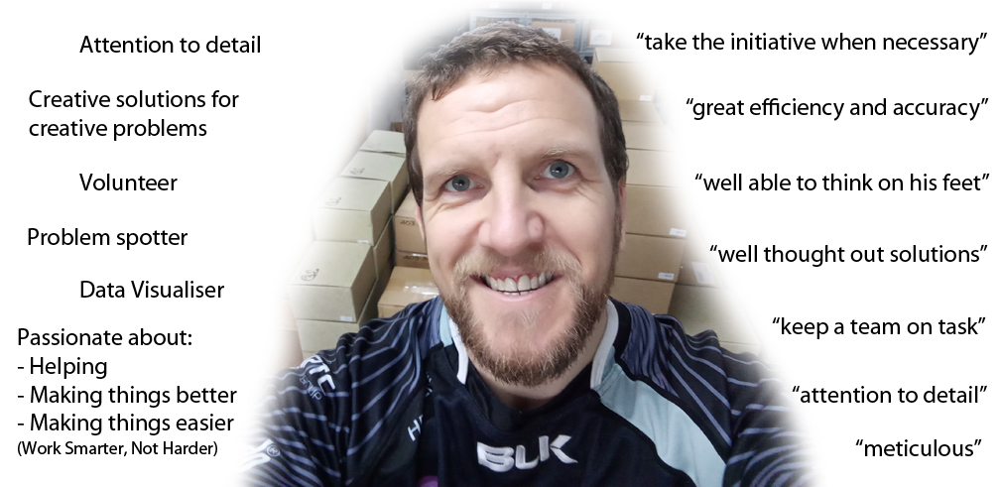

Will Mc - Data Analyst
A skilled Data Cleaner, Inconsistency Spotter and Data Interrogator.

Me:
I am passionate about helping people - will discuss volunteering below - and can be found answering fellow CareerFoundry students questions at all hours.I want to help my employer too! If I see that 'somebody' needs to ... book in that product ... move those pallets ... clean that area ... I step in and just do it.
I also do a lot of forward thinking - aka Problem Spotting - Quickest and Easiest way to do a job?... where does 'that' need to go afterwards?
Me and Data:
I have been working with Excel for over 20 years (and approx the same for HTML). Collating data, comparing it, looking for duplicates (man, do I love a good old 'If-then-else' statement)Now, thanks to the CareerFoundry Data Analytics course, I love visualising data... as well as asking it so many more questions!
I do have a preference for Python (Pandas) over SQL, but am happy to work with both. (One of my jobs used Lotus123 to manage their website. And if I can work around that... )
Volunteering:
I love to help. And I love to help people.I have volunteered at charities and social clubs for over 17 years - from social clubs for people with Intellectual Disabilities to Young Teenagers, to home visitations and helping at the Special Olympics in Ireland (2003).
I also plan to volunteer at the Special Olympics in Berlin in June 2023.
References:
CareersPortal.ie - Data Collator 2011-2014 & 2017
"Will played a significant role during the initial growth of our company, and during these years was responsible for
maintaining some of our most important databases. I found him well disposed to sifting through and organising large
quantities of data and extracting the most important details with great efficiency and accuracy. Most of his work was
published live to our websites without the need for second proofing, as his work was of an excellent standard.
Will is very reliable, very conscientious, well able to think on his feet and take the initiative when necessary - which was often! Most of the time when he encountered data problems, he presented them alongside well thought out solutions, and only in the most difficult situations was I required to contribute to solving the problems." ~ John Carton
Will is very reliable, very conscientious, well able to think on his feet and take the initiative when necessary - which was often! Most of the time when he encountered data problems, he presented them alongside well thought out solutions, and only in the most difficult situations was I required to contribute to solving the problems." ~ John Carton
Schooldays.ie - Website Administrator 2010-2016
"Will has a quietly confident manner and can be relied upon to work quickly and efficiently.
He is meticulous in his attention to detail and is quick to pick up new skills." ~ Anne-Marie Wade
Other CareerFoundry Students
"Will was a co-student with me at CareerFoundry and helped me immensely during my time there. He has experience in data
collection and knows the profession very well. He has helped me in directing how to network and gave me tips daily on
how to improve my Python, Excel and SQL skills. Would 100% recommend adding Will to your team. If you are looking for
someone to encourage, keep a team on task and just generally being a friendly person to work with then
Will is your guy!" ~ Matthew Ossachuk
"I have felt William as a very helpful friend who has always helped us in resolving issues related to different codes of SQL, Python etc. His concepts are amazing and I really enjoy the feedback sessions with him" ~ Keshav Dewan
"I have felt William as a very helpful friend who has always helped us in resolving issues related to different codes of SQL, Python etc. His concepts are amazing and I really enjoy the feedback sessions with him" ~ Keshav Dewan
- © William Mc Weeney
- Design: HTML5 UP